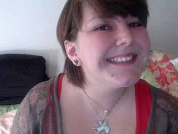
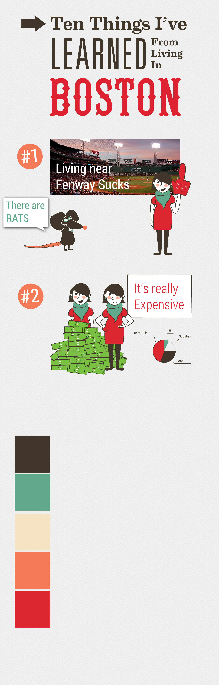

Hi! I'm Leah

A little about me:
I really love to cook!
I'm a junior in GD
Sketches
- MY NEW WEBSITE
Is going to be a fun interactive site that takes the user through my experience living in Boston using the top
ten things that I have learned. Little animations will take place along with fun facts about Boston and other things
of this nature. YEA! Something fun and quirky that'll be fun to make.
-
Top 10 things I’ve learned from Living in Boston the good the bad and the ugly
1. Fenway area is pretty on the outside but living there has shattered the appearance. Cock roaches scurrying through my living room, rats the size of small cats escorting you to your apartment. Lets not forget the lovely gents waiting around in the reeds.
2. It’s not cheap.
3. The ‘homeless’ people wear nicer shoes than I do.
4. Riding a bike is the best way to get around
5. Travel in packs. – Seriously.
6. The pru is the the most infatuating building I’ve ever seen. (goes from night to day)
7. How to spot a bro from a hipster and a tourist from a local
8. My favorite de-stressor is feeding the ducks
9. How to dodge cars
10. Trader Joes is awesome
- 